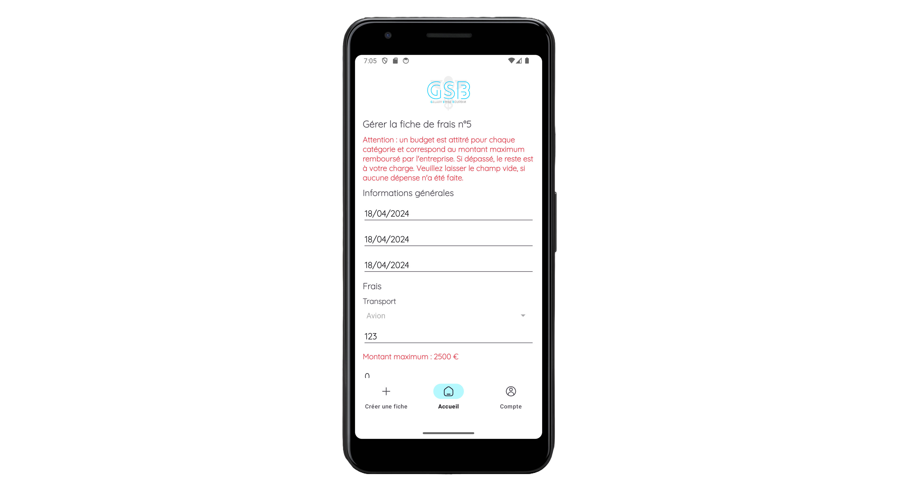
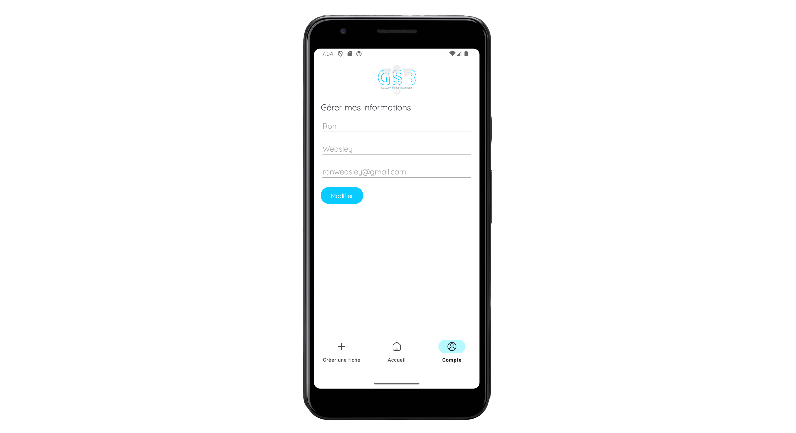
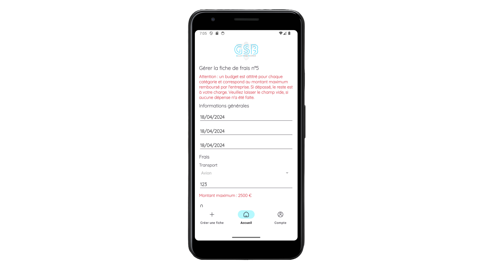
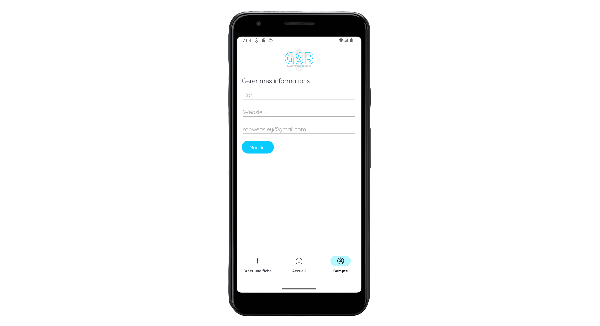

GSB - APP
Contexte
Dans le cadre du projet personnel encadré annuel de deuxième année de BTS SIO, j'ai eu l'opportunité de travailler sur le développement d'une application web et mobile de gestion de fiches de frais pour l'entreprise fictive Galaxy-Swiss Bourdin. Spécialisé dans le milieu médical, GSB est issu de la fusion entre le géant américain Galaxy (travaillant dans le secteur des maladies virales, dont le SIDA et les hépatites) et le conglomérat européen Swiss Bourdin (travaillant sur des médicaments plus conventionnels), lui-même déjà union de trois petits laboratoires. Une conséquence de cette fusion est la recherche d'une optimisation de l’activité du groupe ainsi constitué en réalisant des économies d’échelle dans la production et la distribution de médicaments.
Après deux années de réorganisations internes, tant au niveau du personnel que du fonctionnement administratif, l'entreprise souhaite moderniser l'activité de visite médicale en uniformisant la gestion des fiches de frais grâce au développement d'une application web et mobile capable de répondre à ce besoin.
Technologies
- Environnement de développement intégré : Android Studio
- Environnements : MacOS, Windows
- Gestion de projet : Trello
- Interface d'administration de bases de données : PHPMyAdmin
- Interface de programmation d'application : Postman
- Langages : Java, PHP, SQL, XML
- Librairie : Volley
- Système de gestion de bases de données : MySQL
- Versioning : Git, GitHub
- Éditeur de texte : Visual Studio
Côté back-end, l'application a été développée en langage Java et à l'aide de la librairie Volley afin de faciliter les échanges de données entre celle-ci, l'API et la base de données. La création et la gestion de l'API ont été réalisées avec PHP, la base de données avec PHPMyAdmin et MySQL, et la gestion des requêtes avec SQL dont le traitement a été testé par l'interface de programmation d'application Postman.
Côté front-end, l'interface a été développée avec XML et les outils de design de l'environnement de développement intégré Android Studio.
 



Fonctionnement
Pour accéder à l'application mobile de gestion de fiches de frais, une connexion est requise.
Les identifiants (adresse e-mail et mot de passe) auront été préalablement enregistrés dans la
base
de données par l'administrateur, responsable de la gestion des données.
L'application gère un seul type d'utilisateur, à savoir le
visiteur médical, qui nécessite d'avoir un accès en ligne à l'intranet en tout lieu.
Lorsque l'utilisateur entre ses identifiants, celui-ci est redirigé vers son
portail. Depuis cette page, il peut visualiser et interagir avec un certain nombre
d'informations, notamment toutes ses fiches de frais avec leurs informations (date de
création, nombre de nuitées, montant total et statut du traitement). En tant que visiteur,
il peut consulter les détails de chacune de
ses fiches en cliquant dessus, et selon le statut du traitement, les modifier ou les
supprimer. Lorsque l'utilisateur
consulte une fiche, il a accès aux détails des dépenses et justificatifs fournis concernant
chaque catégorie.
À l'aide de la barre de navigation, l'utilisateur peut également créer une fiche de frais ou
accéder à son compte pour modifier ses informations ou se déconnecter.